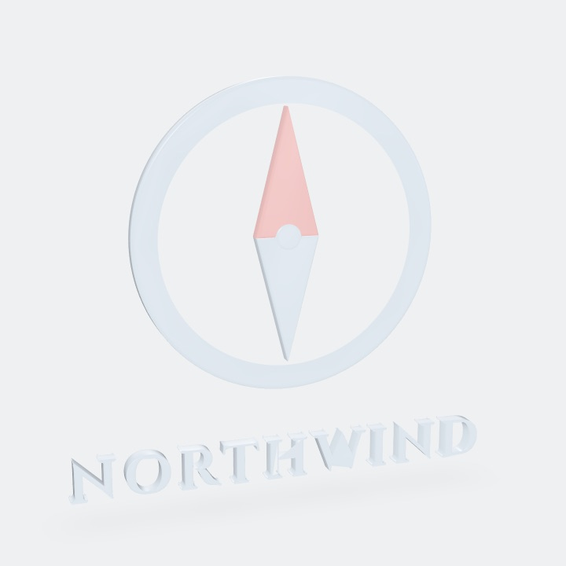
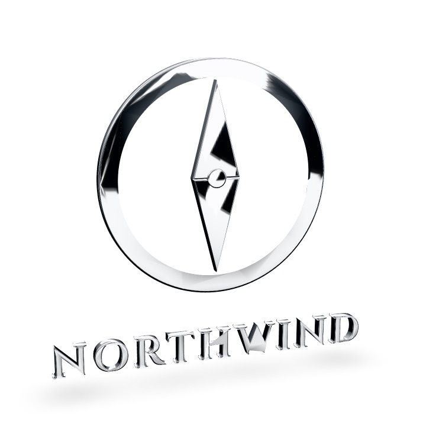
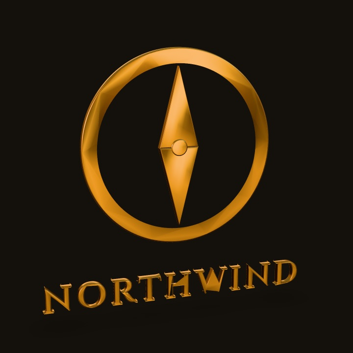
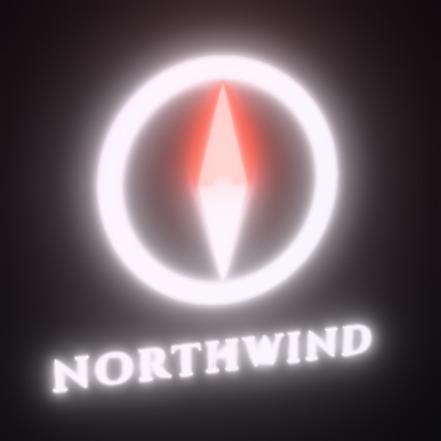
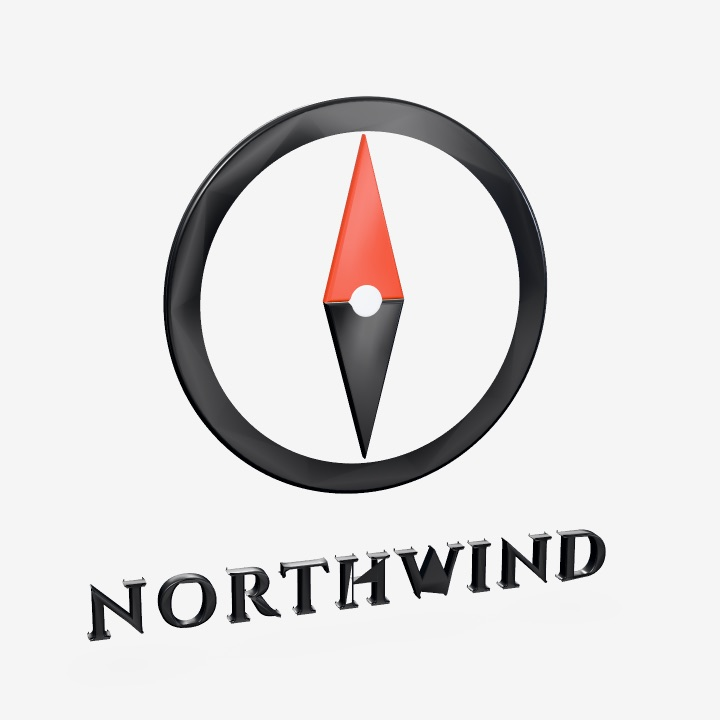
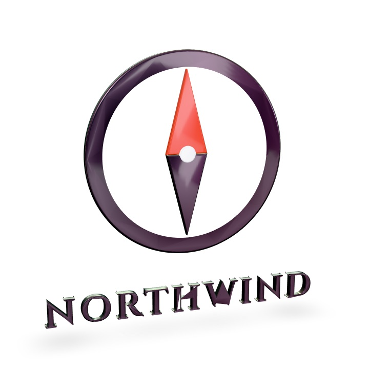

AI logo studio · local-first
Design logos with
your own AI.
A drafting-table canvas your AI draws on while you watch. Sketch the idea, point at what to change, refine by hand — vector-perfect in 2D, premium in 3D.
Make the north tip a bit sharper
How it works
Three minutes from idea to mark.
-
01
Run it in your project
npx brusshyopens the canvas.npx brusshy initconnects your AI once. -
02
Give it a direction
Sketch with the brush, paste a reference to trace, drop your brand notes into
brusshy/brand/— or just describe it: modern, rustic, 1800s, metallic. -
03
Point, don't explain
Pin a note on any curve — “rounder”, “thinner”, “more weight here”. Your AI applies it and replies. Nudge the rest by hand; it costs no tokens.
Sketch → vector
Draw the idea in ten seconds. Your AI keeps the composition and returns clean curves, fixed symmetry and optical balance.
Trace anything
Paste an image, lower its opacity, draw on top. Reference layers never leave the canvas.
Pro editing when you want it
Bézier nodes, snapping, rulers and guides, numeric precision, real shortcuts. Fast for designers, invisible for everyone else.
Your AI sees its work
Every change is rendered back to the agent — including a 16 px check — so it iterates until the mark actually holds up.
2D and 3D, one source
The premium 3D look, one click away.
Rendered in Brusshy from one vector. The same mark extrudes into glass, chrome, gold, neon, porcelain or stone — with studio lighting, bevels and soft shadows already tuned. Change a curve in 2D and the 3D follows.
- Frosted glass
- Chrome
- Gilded
- Neon sign
- Porcelain
- Holographic
- Brushed metal
- Monument






Export
Everything you ship, in one pass.
FAQ
Questions.
Does it cost anything to run?
Brusshy runs on your machine and uses your own AI client and plan. There is no server, account or AI bill from us.
Which AI does it work with?
Anything that speaks MCP: Claude Code, Codex, Gemini, Grok, Cursor, Windsurf and more. npx brusshy init writes the config for you.
Where are my files?
In a brusshy/ folder inside your project: the logos, your references, your brand notes and every export. Nothing is uploaded.
Can I copy another brand's logo?
No — and the 3D presets don't ship anyone's logo. They capture premium looks (glass, chrome, gold) that you apply to your own mark.